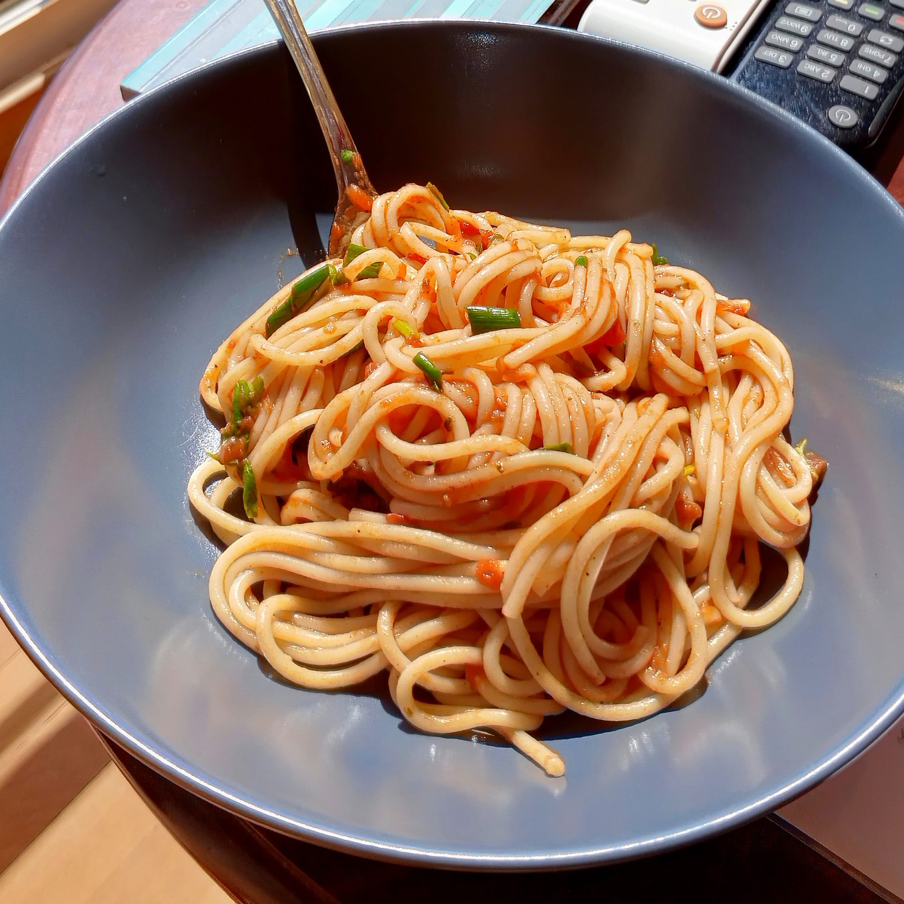

Spaghetti a la Philly

Dish Description
Spaghetti a la Philly includes your favorite spaghetti sauce, combined with cream cheese, and cooked ground beef. It's ease of cooking makes it a popular dinner choice!
Ingredients Used
- 1 pound lean ground beef
- 1 (24 ounce) jar spaghetti sauce
- 4 ounce PHILADELPHIA Cream Cheese, cubed
- 8 ounces spaghetti, cooked and drained
- 2 tablespoons KRAFT Grated Parmesan Cheese
Cooking Steps
- Cook your spaghetti noodles as directed on package
- Brown your meat in a large skillet. Stir in sauce and cream cheese; cook on low heat 3 to 5 minutes or until sauce is well blended and heated through, stirring frequently.
- Drain Spaghetti. Add to sauce; mix lightly. Place on platter; top with Parmesan.